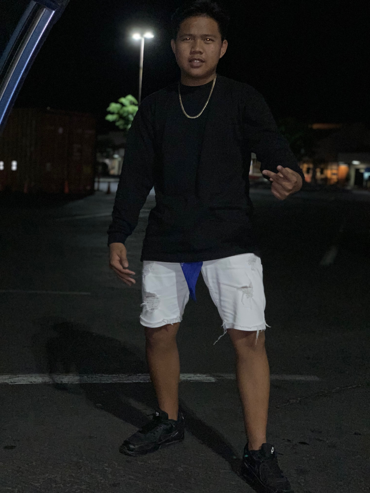

Hey there, My name is Windell aka Windellicious and I am currently attending James Campbell High School as a Senior class of 2020. I was born in the Philippines but my parents settled to hawaii where I was raised. Even though I was raised here in Oahu,HI I am bilingual. I can speak and understand both English and Filipino Language very fluent. I in a city called Kalihi in Oahu but then moved to Ewa Beach also in Oahu because my parents knew it wasn't a safe place for us. Now I am currently in Ewa Beach living young and wild and free. We came to Hawaii for better opportunities because my parentes knew going to Hawaii will take a lot of effort and attitude to live happily in Hawaii. After High School I wanna be the most successful man out there and make my parents proud by going to college and major in Architectural Engineering with thebest positive thought and mind.
If you are interested in knowing some facts about me or a little bit about me, go ahead and go to the next page and click on "Facts" on the upper hand.:)